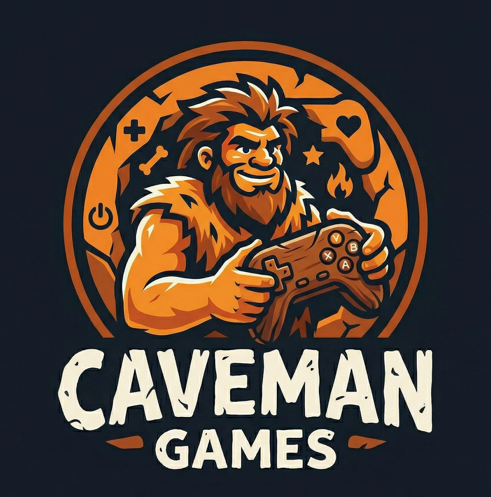

Welkom op de officiële hub van Caveman Games! Hier vind je handige tools, utilities en indie projecten die met liefde zijn gebouwd.
Een gebruiksvriendelijke GUI manager om eenvoudig je Enshrouded dedicated server instellingen en configuraties te beheren.
Download v1.0 (.zip)